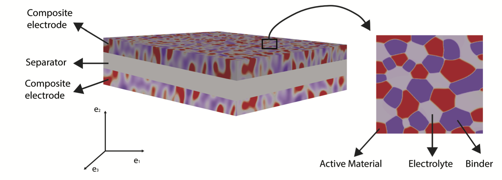
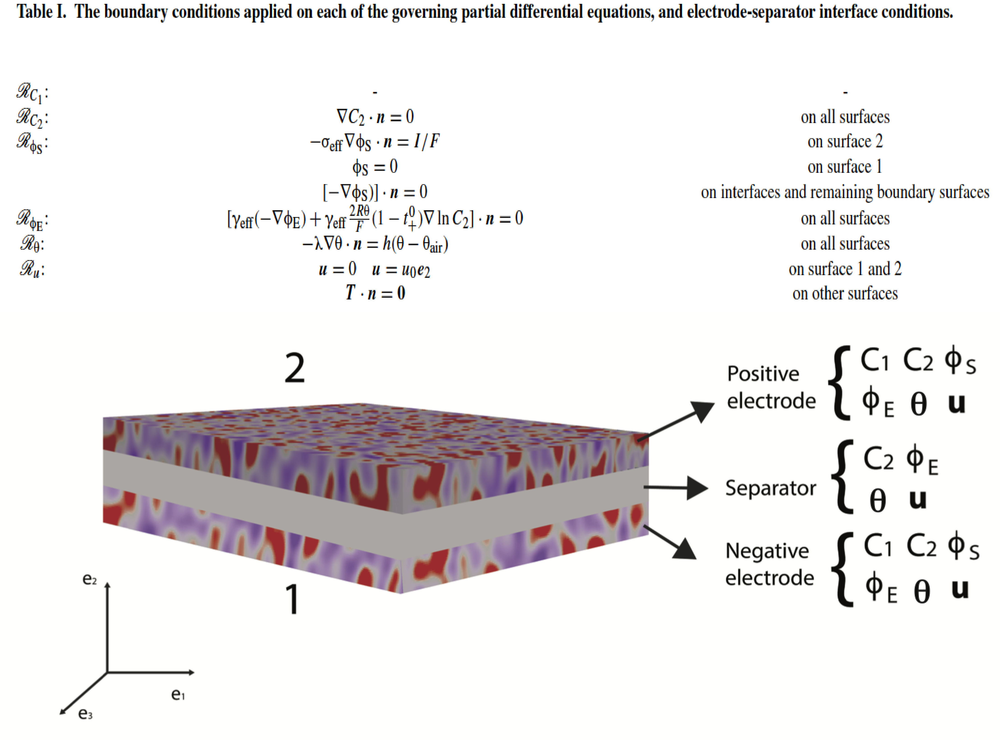
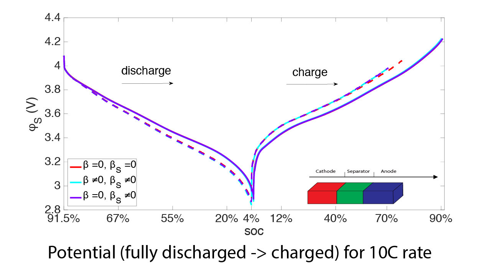
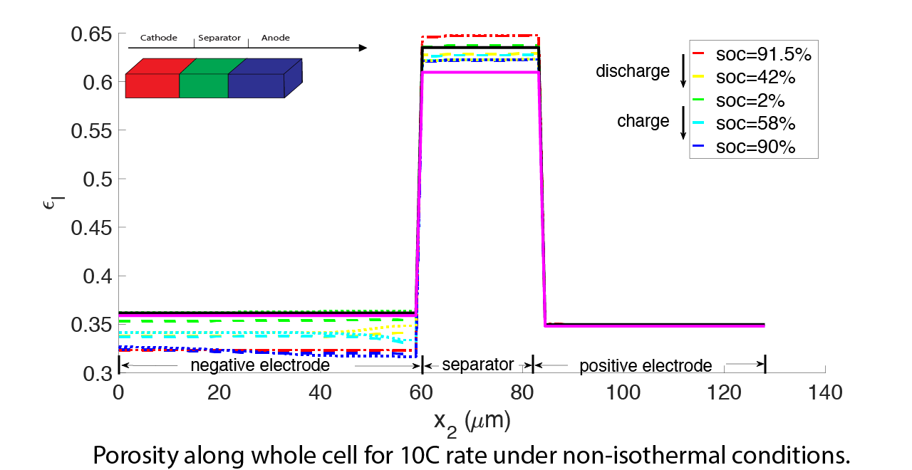

Introduction
A battery cell usually consists of porous, positive and negative electrodes, a separator and a current collector. This example present coupled continuum formulation for the electrostatic, chemical, thermal and mechanical processes in battery materials. The treatment applies on the macroscopic scale, at which electrodes can be modelled as porous materials made up of active particles held together by binders and perfused by the electrolyte.
This code is used to generate results for paper: Intercalation driven porosity effects on the electro-chemo-thermo-mechanical response in continuum models for battery material electrodes, Z. Wang, J. Siegel, K. Garikipati, Journal of the Electrochemical Society, Vol. 164: A2199-A2212, 2017, doi:10.1149/2.0081712jes

A schematic of the three-dimensional cell showing porous electrodes and separator. In this model, the electrolyte fills the pores. The current collectors are not shown.
The multi-physics particle scale model
Electro-chemo-thermal equations
The electrochemical equations for finitely deforming electrodes
The ordinary differential equation for mass balance of lithium:
where is the concentration of lithium in the deformed configuration, is the volume fraction of solid particles, and is related to the inverse radius. For spherical particles of radius , it is defined as . Finally, is the normal flux of lithium on the particle's surface.
The partial differential equation for mass balance of lithium ions, :
where is the volume fraction of pores in the electrode, is the lithium ion transference number, and $D_{eff}$ is the effective diffusivity.
The equations for the electric fields are,
where and are, respectively, the electric potential fields in the electrolyte and solid, and are the corresponding effective conductivities which depend on the porosity, is the universal gas constant and  is the temperature.
is the temperature.
The electrochemical equations are completed with specification of the Butler-Volmer model for the flux of lithium, :
where are transfer coefficients, is a kinetic rate constant,and is the maximum concentration of lithium that the particle can contain. The open circuit potential can be written as a fit depend on .
The standard thermal equations
Heat generation and transport are governed by the heat equation, which is derived from the first law of thermodynamics. For the temperature $$, we have the standard form of the heat equation in the electrodes:
where f  is the mass density of the electrode, is specific heat and
is the mass density of the electrode, is specific heat and  is the thermal conductivity. In the separator, we have:
is the thermal conductivity. In the separator, we have:
The heat generation terms are:
Finite strain mechanics and the evolving porosity model
Lithium intercalation/de-intercalation induces particle swelling/contraction which manifests itself as electrode deformation at the macro-scale. Additionally, the particle and separator undergo thermal expansion.{{blue}The electrolyte is assumed not to undergo thermal expansion. Therefore the decomposition of the deformation into elastic, swelling and thermal contributions does not apply to it.} The kinematics of finite strain leads to the following decomposition:
where , is the total deformation gradient tensor averaged over the constituents of the material. It is multiplicatively decomposed into , and , which are, respectively, its elastic, chemical (induced by lithium intercalation) and thermal components. In the absence of a body force the strong form of the mechanics problem in the current configuration is
where $$ is the Cauchy stress tensor and $W$ is the strain energy density function.
we assume that although the particles undergo isotropic swelling in the electrode due to intercalation of lithium, there is unidirectional swelling along the normal to the separator. This assumption models the non-slip boundary condition that would be applied at the current collector-electrode interface, and which would provide a strong constraint against macroscopic expansion of the electrode in the e1 and e3 directions. Since we do not directly model the current collector, this assumption represents its mechanical effect Accordingly, we have
Thermal expansion is modelled as isotropic
Based on mixture theory (Z. Wang et.al.), the volume fraction of particle in electrode can be modeled by
Assuming the binder to deform at constant volume during charging and discharging such that ${det}{F}_{b}=1$, we have
Boundary condition

A schematic of the initial/boundary value problem showing the fields solved for in the electrode and separator sub-domains, with the surfaces labelled.
Implementation: level 0 developer
Read parameters.prm before defining primary variables over different domains
Here, we want to read the paramters from file at the very beginning of main.cc instead of at run.cc. This is can be easily done at main.cc
ParameterHandler params;
ElectricChemo<Sacado::Fad::DFad<double>,DIMS> _electricChemoFormula(params);
problem.electricChemoFormula=&_electricChemoFormula;
problem.declare_parameters();
params.read_input ("parameters.prm");
Then we can read the domain id, and Define primary variables over different domains just like Example 1
params.enter_subsection("Problem");
int separator_fe=params.get_integer("separator_fe");
int electrode_fe=params.get_integer("electrode_fe");
params.leave_subsection();
std::vector<std::vector<std::string> > primary_variables(6);
primary_variables[0].push_back("u"); primary_variables[0].push_back("component_is_vector");
primary_variables[1].push_back("C_li_plus"); primary_variables[1].push_back("component_is_scalar");
primary_variables[2].push_back("phi_e"); primary_variables[2].push_back("component_is_scalar");
primary_variables[3].push_back("C_li"); primary_variables[3].push_back("component_is_scalar");
primary_variables[4].push_back("phi_s"); primary_variables[4].push_back("component_is_scalar");
primary_variables[5].push_back("T"); primary_variables[5].push_back("component_is_scalar");
int number_domain=2;
std::vector<std::vector<int> > FE_support(number_domain);
FE_support[separator_fe].push_back(1);
FE_support[separator_fe].push_back(1);
FE_support[separator_fe].push_back(1);
FE_support[separator_fe].push_back(0);
FE_support[separator_fe].push_back(0);
FE_support[separator_fe].push_back(1);
FE_support[electrode_fe].push_back(1);
FE_support[electrode_fe].push_back(1);
FE_support[electrode_fe].push_back(1);
FE_support[electrode_fe].push_back(1);
FE_support[electrode_fe].push_back(1);
FE_support[electrode_fe].push_back(1);
Generate mesh internally
In Example 1, mesh is imported from existing mesh. Here we use deal.ii GridGenerator to generate mesh
for (unsigned int j = 0; j < element_div_x; ++j) step_sizes[0].push_back((X_end-X_0)/element_div_x);
for (unsigned int j = 0; j < element_div_y; ++j) step_sizes[1].push_back((Y_end-Y_0)/element_div_y);
if(dim==3)for (unsigned int j = 0; j < element_div_z; ++j) step_sizes[2].push_back((Z_end-Z_0)/element_div_z);
if(dim==2) GridGenerator::subdivided_hyper_rectangle (this->triangulation, step_sizes, Point<dim>(X_0,Y_0), Point<dim>(X_end,Y_end), colorize);
else GridGenerator::subdivided_hyper_rectangle (this->triangulation, step_sizes, Point<dim>(X_0,Y_0,Z_0), Point<dim>(X_end,Y_end,Z_end), colorize);
Finite strain mechanics using Saint Venant Kirchhoff model
After we have elastic deformation gradient tensor Fe, we need to choose the constitutive model for mechanics
Apply neumann boundary condition
In this example we need to apply neumann boundary condition for heat dissipation and current. We need to first find the corresponding surface, and use function residualForNeummanBC.
for (unsigned int faceID=0; faceID<2*dim; faceID++){
if(cell->face(faceID)->at_boundary()){
FEFaceValues<dim>* fe_face_values;
if(domain==1 or domain==-1) fe_face_values=&electrode_fe_face_values;
else if(domain==0) fe_face_values=&separator_fe_face_values;
fe_face_values->reinit (cell, faceID);
const unsigned int n_face_quadrature_points = fe_face_values->n_quadrature_points;
dealii::Table<1,Sacado::Fad::DFad<double> > T_face(n_face_quadrature_points),heat_transfer(n_face_quadrature_points);
for(unsigned int q=0;q<n_face_quadrature_points;q++) heat_transfer[q]=h*(T_face[q]-T_ini);
if(cell->face(faceID)->boundary_id()==dim*2 ){
double current;
if(cell_center[1]<=electrode_Y1) current=current_IpA;
else current=-current_IpA;
}
}
}
Residual scalling
In battery modelling, the value of parameters may differ a lot, and scalling may be necessary before solving. And this is can be easilly done using function scalling.
ResidualEq->scalling(fe_values,c_li_plus_dof,R,1e-3);
ResidualEq->scalling(fe_values,phi_e_dof,R,1e-3);
ResidualEq->scalling(fe_values,c_li_dof,R,1e-5);
ResidualEq->scalling(fe_values,phi_s_dof,R,1e-6);
ResidualEq->scalling(fe_values,T_dof,R,1e-5);
Output extral field computed from primary variabls
During battery simulation, reaction rate is a important intermidate results and we want to output it along with the primary variables. To do so we first need to implement a class derived from computedField<dim>.
#include <deal.II/base/parameter_handler.h>
#include "electricChemo.h"
\code{.cpp}
template <int dim>
{
public:
nodalField(dealii::ParameterHandler& _params);
~nodalField();
dealii::ParameterHandler* params;
void compute_derived_quantities_vector(const std::vector<Vector<double> > &uh,
const std::vector<std::vector<Tensor<1,dim> > > &duh,
const std::vector<std::vector<Tensor<2,dim> > > &dduh,
const std::vector<Point<dim> > &normals,
const std::vector<Point<dim> > &evaluation_points,
std::vector<Vector<double> > &computed_quantities) const;
std::vector<unsigned int > primary_variables_dof;
And overload function compute_derived_quantities_vector for the new field:
template <int dim>
void nodalField<dim>::compute_derived_quantities_vector(const std::vector<Vector<double> > &uh,
const std::vector<std::vector<Tensor<1,dim> > > &duh,
const std::vector<std::vector<Tensor<2,dim> > > &dduh,
const std::vector<Point<dim> > &normals,
const std::vector<Point<dim> > &evaluation_points,
std::vector<Vector<double> > &computed_quantities) const
{
ElectricChemo<double,dim> electricChemoFormula;
electricChemoFormula.params=params;
electricChemoFormula.setParametersFromHandler();
params->enter_subsection("Geometry");
double electrode_Y1=params->get_double("electrode_Y1");
double electrode_Y2=params->get_double("electrode_Y2");
params->leave_subsection();
int u_dof=primary_variables_dof[0];
int c_li_plus_dof=primary_variables_dof[1];
int phi_e_dof=primary_variables_dof[2];
int c_li_dof=primary_variables_dof[3];
int phi_s_dof=primary_variables_dof[4];
int T_dof=primary_variables_dof[5];
const unsigned int dof_per_node = uh.size();
for (unsigned int q=0; q<dof_per_node; ++q){
computed_quantities[q][0]=0;
double c_li_plus, phi_e, c_li, phi_s, T;
c_li_plus=uh[q][c_li_plus_dof];
phi_e=uh[q][phi_e_dof];
c_li=uh[q][c_li_dof];
phi_s=uh[q][phi_s_dof];
T=uh[q][T_dof];
int domain;
if(evaluation_points[q][1]<=electrode_Y1) domain=-1;
else if(evaluation_points[q][1]>=electrode_Y2)domain=1;
else domain=0;
computed_quantities[q][0]=electricChemoFormula.formula_jn(T, c_li, c_li_plus, phi_s, phi_e, domain);
}
}
Then before write KTK file, we need to pass the class to FEMdata<dim,PETScWrappers::MPI::Vector>
nodalField<dim> computedNodalField(*params);
std::vector<std::vector<std::string> > computed_primary_variables={{"jn", "component_is_scalar"}};
computedNodalField.setupComputedField(computed_primary_variables);
computedNodalField.primary_variables_dof=primary_variables_dof;
...
std::string output_path = output_directory+"output-"+std::to_string(current_increment)+".vtk";
Parameterhandler is used to manage all parameters as Example 1
Results
We present few results here by using the following Parameter file:
#parameters file
#1. Thermal modeling of cylindrical lithium ion battery during discharge cycle, Dong Hyup Jeon ⇑,1, Seung Man Baek,2011,Energy Conversion and Management LiC6
# 2. Numerical study on lithium titanate battery thermal response under adiabatic condition,Qiujuan Sun a, Qingsong Wanga 2015, Energy Conversion and Management
#3.white Theoretical Analysis of Stresses in a Lithium Ion Cell
#4 A Computational Model of the Mechanical Behavior within Reconstructed LixCoO2 Li-ion Battery Cathode Particles, Veruska Malavé, J.R. Berger, EA
#5. A pseudo three-dimensional electrochemicalethermal model of a prismatic LiFePO4 battery during discharge process
#6. solid diffusion Single-Particle Model for a Lithium-Ion Cell: Thermal Behavior, Meng Guo,a Godfrey Sikha,b,* and Ralph E. Whitea
#global parameters
#declare problem setting
subsection Problem
set print_parameter = true
set dt = 10
set totalTime = 370
set step_load = false
set first_domain_id = 0
set electrode_id=0
set separator_id=1
set electrode_fe=0
set separator_fe=1
#directory
set output_directory = output/
set snapshot_directory = snapshot/
#FEM
set volume_quadrature = 4
set face_quadrature = 3
#applied current
set IpA = -100
end
# some useful geometry information beforehand
subsection Geometry
set X_0 = 0
set Y_0 = 0
set Z_0 = 0
set X_end = 120
set Y_end = 120
set Z_end = 85
set electrode_Y1 = 60
set electrode_Y2 = 80
set element_div_x = 1
set element_div_y = 120
set element_div_z = 1
end
# initial condition
subsection Initial condition
set c_li_max_neg = 28.7e-3
set c_li_max_pos = 37.5e-3
set c_li_100_neg = 0.915
set c_li_100_pos = 0.022
set c_li_0_neg = 0.02
set c_li_0_pos = 0.98
set c_li_plus_ini = 1.0e-3
set T_0 = 298
end
# parameter for elastiticy equations
subsection Elasticity
set youngsModulus_neg = 12e3 #cite 3 in porosity paper
set youngsModulus_pos = 370e3 #cite4
set youngsModulus_sep = 0.5e3 #cite 3 in porosity paper
set nu_sep = 0.35 #cite 3 in porosity paper
set nu_neg = 0.3 #cite 3 in porosity paper
set nu_pos = 0.2 #cite4
set kappa_sep = 0.42e-3
set kappa_neg = 4.94e-3
set kappa_pos = 7.4e-3
set kappa_s = 25e-3
set pb = 0
set pl = 0
set omega_s = 3.5 #not used but 3.5 is from linear coff in porosity paper
#following from cite 3 in porosity paper
set omega_neg = 9.615e-6
set omega_pos = 6.025e-6
set omega_sep = 82.46e-5
end
# parameter for electro-chemo equations
subsection ElectroChemo #cite6
set sigma_neg = 1.5e8
set sigma_pos = 0.5e8
set t_0 = 0.2
set D_li_neg = 5e-1 #cite 40 in porosity paper in code use expression cite 3
set D_li_pos = 1.0e-1 #cite3
set eps_s_0_neg = 0.53
set eps_s_0_pos = 0.5
set eps_s_0_sep = 0.35
set eps_l_0_neg = 0.32
set eps_l_0_pos = 0.35
set eps_l_0_sep = 0.65
set eps_b_0_neg = 0.15
set eps_b_0_pos = 0.15
set eps_b_0_sep = 0
set R_s_0_neg = 8.0
set R_s_0_pos = 6.0
set R_s_0_sep = 0.0
# parameter for Butler-Volmer equations at ElectricChemo class
set F = 96485.3329
set Rr = 8.3144598
set alpha_a = 0.5
set alpha_c = 0.5
set k_neg = 0.8 #to match porosity paper
set k_pos = 0.8 #to match porosity paper
set c_max_neg = 28.7e-3
set c_max_pos = 37.5e-3
end
# parameter for thermal equations
subsection Thermal
set lambda_neg = 1.04e6 #cite1
set lambda_pos = 5e6 #cite1
set lambda_sep = 0.33e6 #cite1
set density_neg = 2.5e-15 #cite1
set density_pos = 2.5e-15 #cite1
set density_sep = 1.1e-15 #cite1
set Cp_s_neg = 700e12 #cite1
set Cp_s_pos = 700e12 #cite1
set Cp_sep = 700e12 #cite1
set h = 5 #Heat transfer coefficient
end
#==============================================================================
# parameters reserved for deal.ii first level code:
#nonLinear_method : classicNewton
#solver_method (direct) : PETScsuperLU, PETScMUMPS
#solver_method (iterative) : PETScGMRES PETScBoomerAMG
#relative_norm_tolerance, absolute_norm_tolerance, max_iterations
#
subsection Nonlinear_solver
set nonLinear_method = classicNewton
set relative_norm_tolerance = 1.0e-10
set absolute_norm_tolerance = 1.0e-7
set max_iterations = 8
end
subsection Linear_solver
set solver_method = PETScMUMPS
set system_matrix_symmetricFlag = false # default is false
end


Many more results can be found at paper: Intercalation driven porosity effects on the electro-chemo-thermo-mechanical response in continuum models for battery material electrodes, Z. Wang, J. Siegel, K. Garikipati, Journal of the Electrochemical Society, Vol. 164: A2199-A2212, 2017, doi:10.1149/2.0081712jes
Complete code
The complete implementaion can be found at Github.
 1.8.5
1.8.5